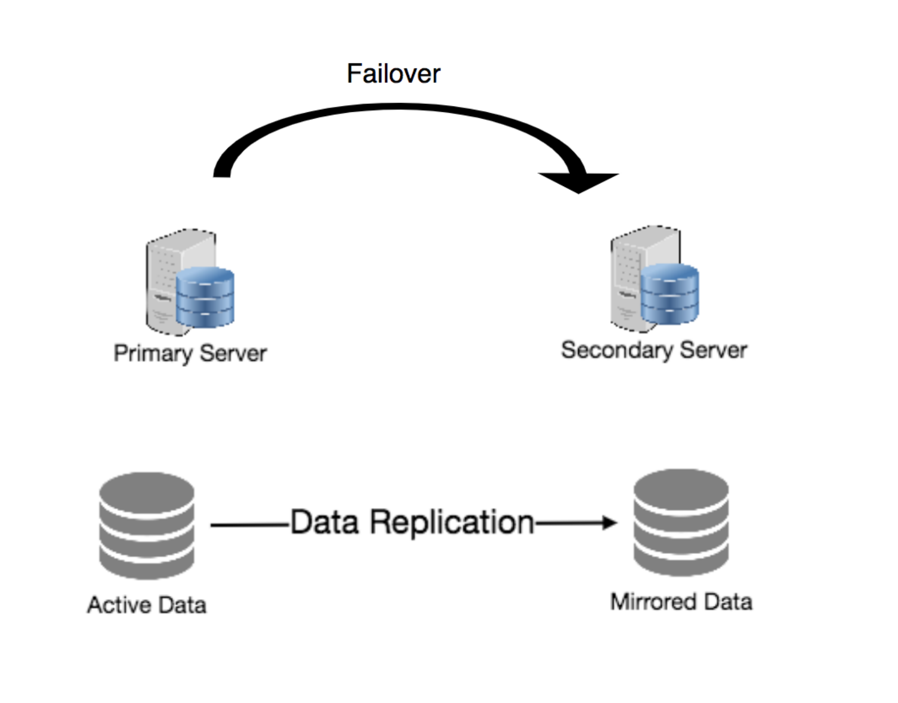

冗余与复制
冗余是指为了提高系统的可靠性而对关键数据或服务进行复制。例如，如果一个文件只有一个副本存储在单个服务器上，那么丢失该服务器就意味着丢失该文件。由于数据丢失不是一件好事，我们可以创建文件的副本或冗余副本来解决这个问题。
同样的原则也适用于服务。如果我们的系统中有一个关键的服务，确保它的多个副本或版本同时运行可以防止单个节点的故障。
在系统中创建冗余可以消除单点故障，并在危机需要时提供备份。例如，如果我们有一个服务在生产中运行的两个实例，如果其中一个失败或降级，系统可以故障转移到另一个。这些故障转移可以自动发生，也可以手动完成。

服务冗余的另一个重要部分是创建无共享体系结构，其中每个节点可以独立地运行。不应该有任何中央服务来管理其他节点的状态或协调活动。这对可伸缩性大有帮助，因为新的服务器可以在没有特殊条件或知识的情况下添加，最重要的是，这样的系统对故障更有弹性，因为没有单点故障。